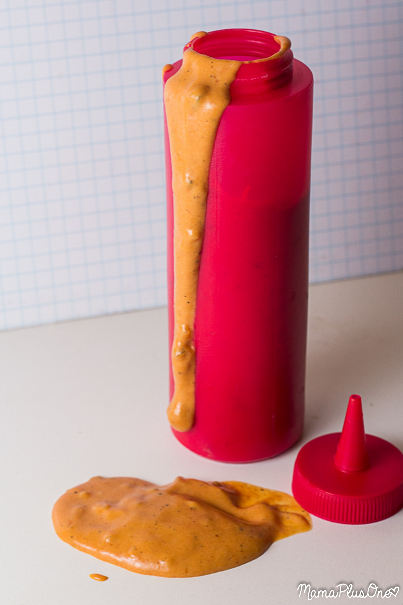

Ed Sauce

The Ed Sauce originated in the 1997 movie Good Burger, and it was a good movie. The sauce was really popular in the film's universe, and you might
get people to actually care about you when you make this show-stopping condiment.
Ingredients
- 1/2 cup of mayo
- 2 tbsp of Thousand Island Dressing
- 2 tbsp of barbecue sauce
- 1 tbsp of sweet pickle relish
- 2 tsp of onion powder
- 2 tbsp of lemon juice
- 1 tsp of vinegar
- 1/2 tsp of sugar
- 1/4 tsp of salt
- 1/8 tsp of pepper
- 6 drops of red food colouring (optional)
- 10 drops of yellow food colouring (optional)
Steps
- Mix all the ingredients together
- Chill for at least 15 minutes
- Serve on burgers or other sandwiches, or use as a dip for fries or chips
- Keep refridgerated in an airtight container for up to two weeks
Home